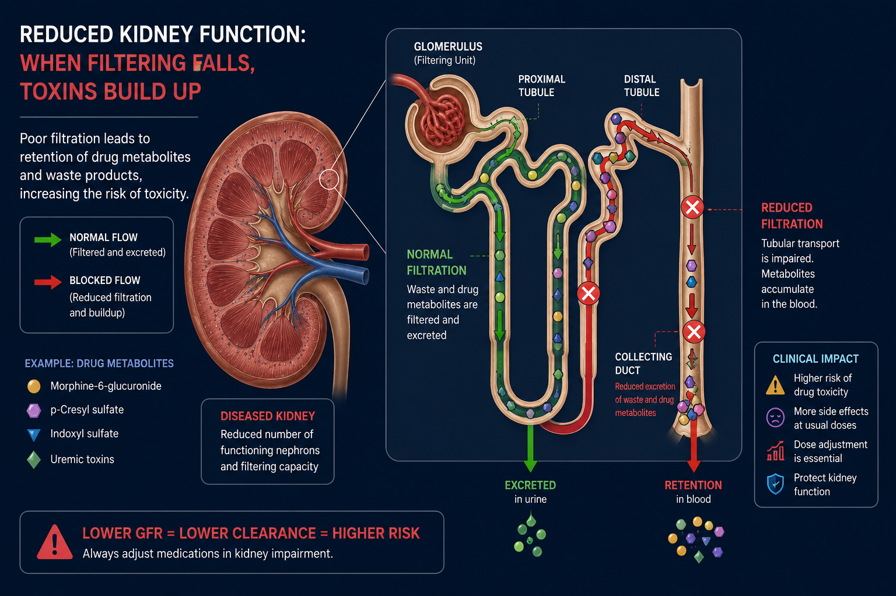
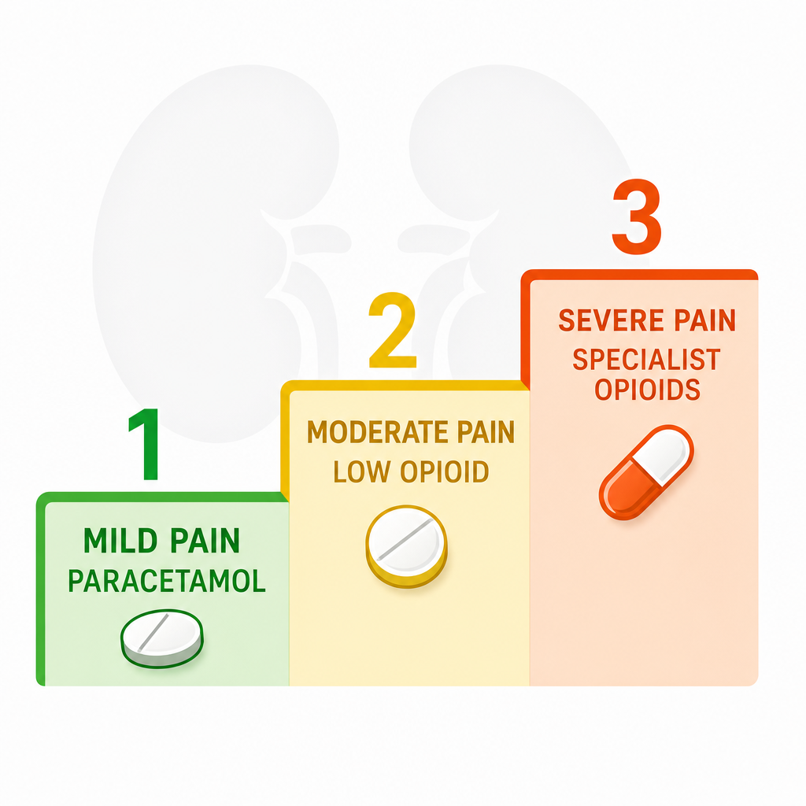
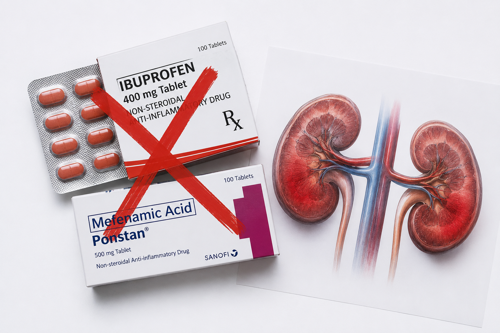
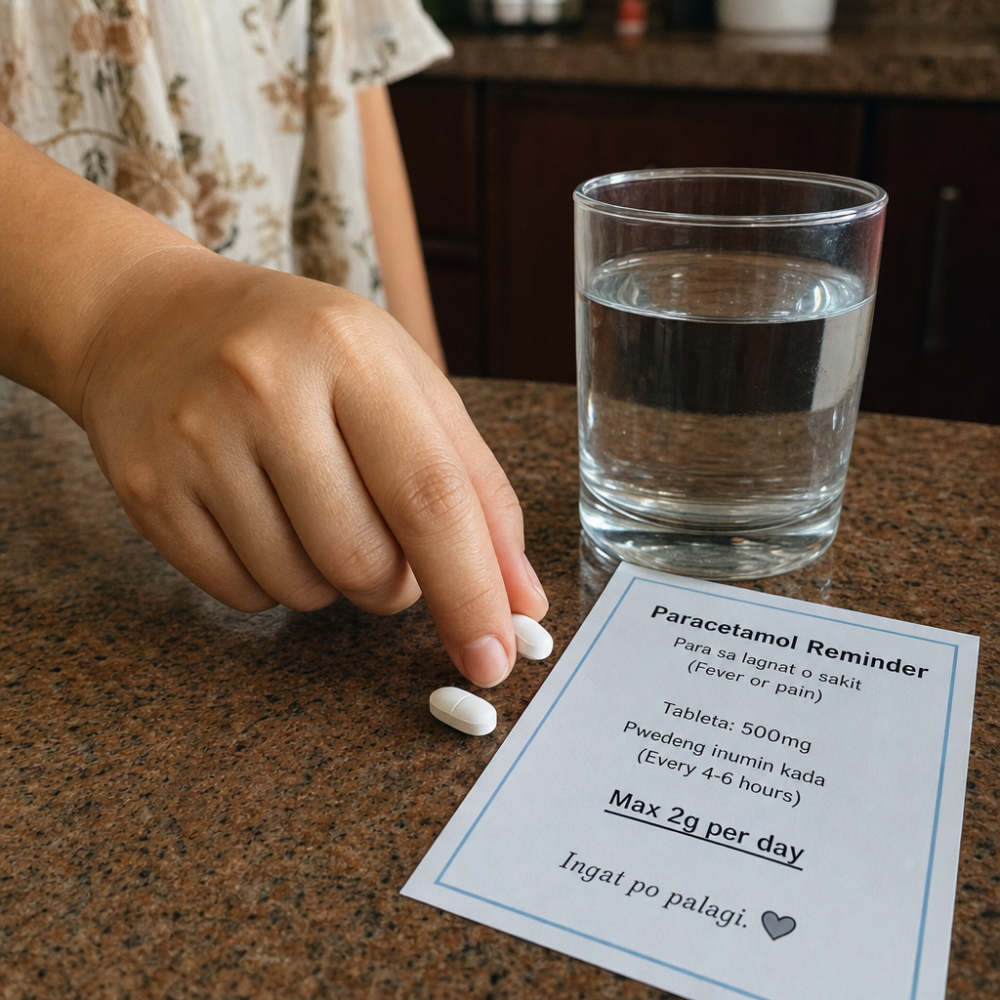

Why Pain Management Is Uniquely Dangerous in CKDBakit ang Pamamahala ng Sakit ay Natatanging Mapanganib sa CKDNganong ang Pagdumala sa Kasakit Espesyal nga Delikado sa CKDBakit ing Pamamahala ning Sakit Natatanging Mapanganib king CKD
CKD patients carry a double burden: they experience more pain than the general population, yet nearly every standard painkiller is unsafe for them. NSAIDs — the world's most commonly used painkillers — directly damage kidneys and accelerate CKD progression. Morphine and codeine accumulate to dangerously toxic levels. Even tramadol causes seizures. The very drugs that relieve pain in healthy people can accelerate kidney failure or cause death in CKD patients. Safe pain management in CKD requires choosing the right drug, the right dose, and the right monitoring plan — every time.Ang mga pasyente ng CKD ay may dobleng pasanin: nakakaranas sila ng mas maraming sakit kaysa sa pangkalahatang populasyon, ngunit halos bawat karaniwang painkiller ay hindi ligtas para sa kanila. Ang NSAIDs — ang pinakakaraniwang ginagamit na pampalubag-loob sa buong mundo — ay direktang pumipinsala sa mga bato at nagpapabilis ng pag-unlad ng CKD. Ang morphine at codeine ay nag-iipon sa mapanganib na nakalason na antas. Kahit ang tramadol ay nagdudulot ng mga seizure. Ang mga gamot na nagpapawi ng sakit sa mga malusog na tao ay maaaring magpabilis ng pagpalya ng bato o magdulot ng kamatayan sa mga pasyente ng CKD.Ang mga pasyente sa CKD adunay doble nga palas: nakasinati sila og mas daghang kasakit kaysa sa kinatibuk-ang populasyon, apan hapit matag naandan nga painkiller dili luwas para sa kanila. Ang NSAIDs — ang pinaka-kasagarang gigamit nga mga painkiller sa tibuok kalibutan — direktong nagdaot sa mga kidney ug nagpadali sa pag-usbaw sa CKD. Ang morphine ug codeine nagtigom sa grabe nga nakaposon nga mga lebel. Bisan ang tramadol naghatag og mga seizure.Deng mga pasyente ning CKD maki doble a pasanin: nakakaranas la ning mas maraming sakit kaysa king pangkalahatang populasyon, pero halos bawat karaniwang painkiller hindi ligtas para karela. Deng NSAIDs — deng pinakakaraniwang ginagamit a mga painkiller sa buong mundo — direktang pumipinsala kareng batu at nagpapabilis ning pag-unlad ning CKD. Ing morphine at codeine nagtitipon sa mapanganib a nakalason a antas. Kahit ing tramadol nagdudulot ning mga seizure.
How common is pain in CKD?Gaano kadalas ang sakit sa CKD?Unsa ka sagad ang kasakit sa CKD?Kapilan kadalas ing sakit king CKD?
Nearly 60% of CKD patients experience chronic pain. Of those, most rate their pain as moderate to severe. Sources include: musculoskeletal pain (most common), neuropathic pain from uremic neuropathy, gout and crystal arthropathy, vascular access pain, cramping during dialysis, and calciphylaxis-related pain.Halos 60% ng mga pasyente ng CKD ay nakakaranas ng kronikong sakit. Kabilang dito ang: musculoskeletal na sakit (pinakakaraniwan), neuropathic na sakit mula sa uremic neuropathy, gout at crystal arthropathy, sakit sa vascular access, krampas sa panahon ng dialysis, at sakit na may kaugnayan sa calciphylaxis.Hapit 60% sa mga pasyente sa CKD nakasinati sa kroniko nga kasakit. Kasama niini: musculoskeletal nga kasakit (labing kasagaran), neuropathic nga kasakit gikan sa uremic neuropathy, gout ug crystal arthropathy, kasakit sa vascular access, krampas sa panahon sa dialysis.Hapit 60% ning deng pasyente ning CKD nakakaranas ning kroniko a sakit. Kasali diti: musculoskeletal a sakit (pinakakaraniwan), neuropathic a sakit mula sa uremic neuropathy, gout at crystal arthropathy, sakit king vascular access, cramping king panahon ning dialysis.
Why under-treated pain is also harmfulBakit ang hindi sapat na paggamot ng sakit ay nakapipinsala rinNganong ang dili igo nga pagtambal sa kasakit makadaot usabBakit ing hindi sapat a paggamot ning sakit nakakasama da
Untreated chronic pain in CKD is strongly associated with depression, anxiety, sleep disturbance, reduced physical activity, malnutrition, and lower quality of life. Patients who cannot sleep or move due to pain deteriorate faster. The goal is not zero pain medication — it is the safest effective analgesic strategy for each patient.Ang hindi ginagamot na kronikong sakit sa CKD ay malakas na nauugnay sa depresyon, pagkabalisa, pagkagambala sa tulog, nabawasang pisikal na aktibidad, malnutrisyon, at mas mababang kalidad ng buhay. Ang mga pasyenteng hindi makatulog o makagalaw dahil sa sakit ay mas mabilis na lumalala.Ang dili gitambal nga kroniko nga kasakit sa CKD kusog nga konektado sa depresyon, kabalaka, pagkagambala sa tulog, nabawasan nga pisikal nga kalihokan, malnutrisyon, ug ubos nga kalidad sa kinabuhi. Ang mga pasyente nga dili makatulog o makalihok tungod sa kasakit nagpalala og mas paspas.Ing hindi ginagamot a kroniko a sakit king CKD malakas a kaugnay sa depresyon, pagkabalisa, pagkagambala sa tulog, nabawasang pisikal a aktibidad, malnutrisyon, at mas mababang kalidad ning buhay.
How CKD Changes Drug MetabolismPaano Binabago ng CKD ang Metabolismo ng GamotUnsaon sa CKD Pagbag-o sa Metabolismo sa TambalPanung Binabago ning CKD ing Metabolismo ning Gamot

In CKD, reduced renal clearance allows drugs and their active metabolites to accumulate to toxic levels with standard dosing. Morphine-6-glucuronide, the active metabolite of morphine, accumulates 20× faster in ESKD — causing respiratory depression with doses safe in healthy patients.Sa CKD, ang nabawasang renal clearance ay nagpapahintulot sa mga gamot at kanilang mga aktibong metabolite na mag-ipon sa mapanganib na antas sa karaniwang dosifikasyon. Ang morphine-6-glucuronide, ang aktibong metabolite ng morphine, ay nag-iipon ng 20× na mas mabilis sa ESKD — nagdudulot ng respiratory depression sa mga dosis na ligtas sa malusog na mga pasyente.Sa CKD, ang nabawasan nga renal clearance nagtugot sa mga tambal ug ilang mga aktibong metabolite sa pag-ipon ngadto sa makadaot nga mga lebel sa standard nga dosis. Ang morphine-6-glucuronide, ang aktibong metabolite sa morphine, nag-iipon og 20× nga mas paspas sa ESKD — nagdala sa respiratory depression sa mga dosis nga luwas sa mga himsog nga pasyente. King CKD, ing nabawasang renal clearance ya nagpapahintulot king deng gamut at kanilang deng aktibong metabolite a mag-ipon king mapanganib a antas king karaniwang dosifikasyon. Ing morphine-6-glucuronide, ing aktibong metabolite ning morphine, ya nag-iipon ning 20× a mas mabilis king ESKD — nagdudulot ning respiratory depression king deng dosis a ligtas king malusog a deng pasyente.
The kidneys are not just filters — they are one of the body's primary drug elimination organs. When kidney function falls, drugs and their active metabolites accumulate in the blood. A drug that is safe at a normal dose in a healthy person may reach toxic concentrations in CKD — even at the same dose — simply because the kidneys can no longer excrete it fast enough.Ang mga bato ay hindi lamang mga salaan — sila ay isa sa pangunahing organo ng katawan para sa pag-aalis ng gamot. Kapag bumaba ang function ng bato, ang mga gamot at kanilang mga aktibong metabolite ay nag-iipon sa dugo. Ang isang gamot na ligtas sa normal na dosis sa isang malusog na tao ay maaaring maabot ang nakalason na konsentrasyon sa CKD — kahit sa parehong dosis.Ang mga kidney dili lang mga salaan — sila usa sa panguna nga organ sa lawas para sa pagtangtang sa tambal. Kon mahulog ang function sa kidney, ang mga tambal ug ilang aktibong metabolite nagtigom sa dugo. Ang usa ka tambal nga luwas sa normal nga dosis sa usa ka himsog nga tawo mahimong makaabut sa nakaposon nga konsentrasyon sa CKD — bisan sa mao rang dosis.Deng batu hindi lamang mga salaan — la metung kareng pangunahing organo ning katawan para sa pag-alis ning gamot. Nung bumaba ing function ning batu, deng mga gamot at kanilang aktibong metabolites nagtitipon king dala. Ing metung a gamot a ligtas sa normal a dosis king metung a malusog a tao maaaring maabot ning nakalason a konsentrasyon king CKD.
Reduced drug excretionNabawasang exkresiyon ng gamotNabawasan nga excretion sa tambalNabawasang excretion ning gamot
GFR determines how fast water-soluble (hydrophilic) drugs and their metabolites are cleared. As GFR falls, half-lives extend — a drug that normally lasts 6 hours may last 24–48 hours in severe CKD, causing dangerous accumulation with standard dosing intervals.Tinutukoy ng GFR kung gaano kabilis ang pag-aalis ng mga water-soluble na gamot at kanilang mga metabolite. Habang bumababa ang GFR, nagpapahaba ang half-lives — ang isang gamot na karaniwang tumatagal ng 6 na oras ay maaaring tumagal ng 24–48 oras sa matinding CKD.Ang GFR nagtino kung unsa ka paspas ang pagtangtang sa mga water-soluble nga tambal. Samtang mahulog ang GFR, nagpatas ang half-lives — ang usa ka tambal nga naandan nga molungtad og 6 ka oras mahimong molungtad og 24–48 ka oras sa grabe nga CKD.Ing GFR nagtutukoy kung kapilan kabilis ing pag-alis ning deng water-soluble a mga gamot. Habang bumababa ing GFR, nagpapahaba deng half-lives — ing metung a gamot a karaniwan tumatatagal ning 6 oras maaaring tumagal ning 24–48 oras king matinding CKD.
Toxic active metabolitesMga nakalason na aktibong metaboliteNakaposon nga aktibong metaboliteNakalason a aktibong metabolites
Many drugs are metabolized into active compounds that are also renally cleared. Morphine-6-glucuronide (active analgesic), morphine-3-glucuronide (causes excitation and seizures), codeine-6-glucuronide (respiratory depression), and tramadol's O-desmethyltramadol (seizures) all accumulate in CKD with devastating consequences.Maraming gamot ang nino-metabolize sa mga aktibong compound na renally cleared din. Ang morphine-6-glucuronide (aktibong analgesic), morphine-3-glucuronide (nagdudulot ng excitation at seizures), codeine-6-glucuronide (respiratory depression), at O-desmethyltramadol ng tramadol (seizures) ay nag-iipon sa CKD.Daghang mga tambal nametabolize ngadto sa aktibong compounds nga renally cleared usab. Ang morphine-6-glucuronide (aktibong analgesic), morphine-3-glucuronide (naghatag sa excitation ug seizures), codeine-6-glucuronide (respiratory depression), ug tramadol's O-desmethyltramadol (seizures) tanan nagtigom sa CKD.Maraming gamot nime-metabolize king aktibong compounds a renally cleared da. Ing morphine-6-glucuronide (aktibong analgesic), morphine-3-glucuronide (nagdudulot ning excitation at seizures), codeine-6-glucuronide (respiratory depression), at tramadol's O-desmethyltramadol (seizures) lahat nagtitipon king CKD.
Altered protein bindingNabagong protein bindingNabag-o nga protein bindingNabagong protein binding
Uremic toxins compete with drugs for albumin binding sites. This increases the free (active) fraction of many drugs — meaning even a "normal" blood level may represent a much higher effective drug concentration. Drugs highly protein-bound (NSAIDs, diazepam) are particularly affected.Ang mga uremic toxin ay nakikipagkumpetensya sa mga gamot para sa mga albumin binding sites. Ito ay nagpapataas ng free (aktibo) na bahagi ng maraming gamot — ibig sabihin kahit ang "normal" na antas ng dugo ay maaaring kumatawan sa mas mataas na epektibong konsentrasyon ng gamot.Ang mga uremic toxin nakig-kompetensya sa mga tambal para sa mga albumin binding sites. Nagpataas kini sa free (aktibo) nga bahin sa daghang tambal — ibig sabihin bisan ang "normal" nga lebel sa dugo mahimong nagrepresenta sa mas taas nga epektibong konsentrasyon sa tambal.Deng mga uremic toxins nakikipagkumpetensya sa deng mga gamot para sa deng albumin binding sites. Iti nagpapataas ning free (aktibo) a bahagi ning maraming gamot — ibig sabihin kahit ing "normal" a antas king dala maaaring kumatawan sa mas mataas a epektibong konsentrasyon ning gamot.
The Analgesic Ladder in CKD — Start Low, Go SlowAng Analgesic Ladder sa CKD — Magsimulang Mababa, Mag-unlad nang Dahan-dahanAng Analgesic Ladder sa CKD — Magsugod og Ubos, Moadto nang HinayIng Analgesic Ladder king CKD — Magsimulang Mababa, Mag-unlad nang Dahan-dahan

The CKD analgesic ladder differs critically from the standard WHO ladder — NSAIDs are removed from Step 1, non-pharmacological approaches are elevated to primary treatment, and opioid selection is restricted to those with safe metabolite profiles in renal failure.Ang analgesic ladder ng CKD ay kritikal na naiiba mula sa karaniwang WHO ladder — ang mga NSAID ay tinanggal mula sa Hakbang 1, ang mga hindi parmasyutikong pamamaraan ay itinataas bilang pangunahing paggamot, at ang pagpili ng opioid ay nililimitahan sa mga may ligtas na profil ng metabolite sa renal failure.Ang analgesic ladder sa CKD kritikal nga nagkalahi gikan sa standard nga WHO ladder — ang mga NSAID gikuha gikan sa Lakang 1, ang mga dili parmasyutiko nga pamaagi giitaas ingon nag-unang pagtambal, ug ang pagpili sa opioid gilimitahan sa mga adunay luwas nga profil sa metabolite sa renal failure. Ing analgesic ladder ning CKD ya kritikal a naiiba mula king karaniwang WHO ladder — ing deng NSAID ya tinanggal mula king Hakbang 1, ing deng ali parmasyutikong pamamaraan ya itinataas bilang pangunahing paggamut, at ing pagpili ning opioid ya nililimitahan king deng atin ligtas a profil ning metabolite king renal failure.
The WHO analgesic ladder — designed for cancer pain — applies to CKD pain management with important modifications. The core principle remains: start with the safest, least potent option and escalate only when needed. In CKD, this principle is not just good practice — it is essential for survival.Ang WHO analgesic ladder — dinisenyo para sa sakit ng kanser — ay naaangkop sa pamamahala ng sakit sa CKD na may mahahalagang pagbabago. Ang pangunahing prinsipyo ay nananatili: magsimula sa pinaka-ligtas, pinaka-mahinang opsyon at umakyat lamang kung kinakailangan.Ang WHO analgesic ladder — gidisenyo para sa kasakit sa cancer — angay sa pagdumala sa kasakit sa CKD nga adunay importanteng mga pagbabag. Ang panguna nga prinsipyo nagpabilin: magsugod sa pinaka-luwas, pinaka-huyang opsyon ug moakyat lang kon kinahanglan.Ing WHO analgesic ladder — inidisenyo para sa sakit ning cancer — naaangkop sa pamamahala ning sakit king CKD a maki mahalagang mga pagbabago. Ing pangunahing prinsipyo nananatili: magsimula sa pinaka-ligtas, pinaka-mahina a opsyon at umakyat lamang nung kailangan.
Step 1 — Mild pain (NRS 1–3): Non-opioid ± adjuvantHakbang 1 — Banayad na sakit (NRS 1–3): Non-opioid ± adjuvantLakang 1 — Banayad nga kasakit (NRS 1–3): Non-opioid ± adjuvantHakbang 1 — Banayad a sakit (NRS 1–3): Non-opioid ± adjuvant
Paracetamol (acetaminophen) is first-line — max 2 g/day in CKD (not 4 g/day as in normal kidneys). Topical NSAIDs (diclofenac gel) for localized musculoskeletal pain — minimal systemic absorption. Topical lidocaine patches for neuropathic pain. Non-pharmacologic: heat, cold, physiotherapy.Ang paracetamol (acetaminophen) ang pangunahing gamot — max 2 g/araw sa CKD (hindi 4 g/araw tulad ng sa normal na bato). Topical NSAIDs (diclofenac gel) para sa lokal na musculoskeletal na sakit. Topical lidocaine patches para sa neuropathic na sakit.Ang paracetamol (acetaminophen) ang una nga gamot — max 2 g/adlaw sa CKD (dili 4 g/adlaw sama sa normal nga kidney). Topical NSAIDs (diclofenac gel) para sa lokal nga musculoskeletal nga kasakit. Topical lidocaine patches para sa neuropathic nga kasakit.Ing paracetamol (acetaminophen) ing pangunahing gamot — max 2 g/araw king CKD (hindi 4 g/araw tulad ning sa normal a batu). Topical NSAIDs (diclofenac gel) para sa lokal a musculoskeletal a sakit. Topical lidocaine patches para sa neuropathic a sakit.
Step 2 — Moderate pain (NRS 4–6): Low-potency opioid + adjuvantHakbang 2 — Katamtamang sakit (NRS 4–6): Low-potency opioid + adjuvantLakang 2 — Katamtam nga kasakit (NRS 4–6): Low-potency opioid + adjuvantHakbang 2 — Katamtamang sakit (NRS 4–6): Low-potency opioid + adjuvant
Tramadol — use with caution; max 100 mg BID if CrCl 10–30 mL/min, max 50 mg BID if on dialysis. Low-dose oxycodone or hydromorphone with dose reduction. Add gabapentinoid for neuropathic component (dose-adjusted for GFR). Avoid codeine entirely — toxic metabolite accumulation even at low doses.Tramadol — gamitin nang maingat; max 100 mg BID kung CrCl 10–30 mL/min, max 50 mg BID kung nasa dialysis. Mababang dosis na oxycodone o hydromorphone na may pagbabawas ng dosis. Magdagdag ng gabapentinoid para sa neuropathic na bahagi. Iwasan ang codeine nang ganap.Tramadol — gamiton nga pag-amping; max 100 mg BID kon CrCl 10–30 mL/min, max 50 mg BID kon naa sa dialysis. Ubos nga dosis sa oxycodone o hydromorphone nga adunay pagpababa sa dosis. Isugid ang gabapentinoid para sa neuropathic nga bahin. Likayi ang codeine hingpit.Tramadol — gamitin nang maingat; max 100 mg BID nung CrCl 10–30 mL/min, max 50 mg BID nung king dialysis. Mababang dosis a oxycodone o hydromorphone a maki pagbabawas ning dosis. Magdagdag ning gabapentinoid para sa neuropathic a bahagi. Iwasan ing codeine nang ganap.
Step 3 — Severe pain (NRS 7–10): Strong opioid (specialist-guided)Hakbang 3 — Matinding sakit (NRS 7–10): Malakas na opioid (gabay ng espesyalista)Lakang 3 — Grabe nga kasakit (NRS 7–10): Kusog nga opioid (gabay sa espesyalista)Hakbang 3 — Matinding sakit (NRS 7–10): Malakas a opioid (gabay ning espesyalista)
Buprenorphine is the preferred strong opioid in CKD/ESKD — hepatically metabolized, safer metabolite profile, partially dialyzable. Fentanyl patch — acceptable for stable pain but avoid in HD patients (accumulation). Methadone — safe but complex pharmacokinetics requiring specialist prescribing. Morphine and hydromorphone require extreme caution and dose reduction. All strong opioids in CKD require specialist co-management and close monitoring.Ang buprenorphine ang pinabiling malakas na opioid sa CKD/ESKD — hepatically metabolized, mas ligtas na metabolite profile. Fentanyl patch — katanggap-tanggap para sa stable na sakit ngunit iwasan sa mga pasyente ng HD. Methadone — ligtas ngunit may kumplikadong pharmacokinetics na nangangailangan ng espesyalista. Ang morphine at hydromorphone ay nangangailangan ng matinding pag-iingat.Ang buprenorphine ang gipiling kusog nga opioid sa CKD/ESKD — hepatically metabolized, mas luwas nga metabolite profile. Fentanyl patch — daw-on para sa stable nga kasakit apan likayi sa mga pasyente sa HD. Methadone — luwas apan komplikado nga pharmacokinetics nga nanginahanglan sa espesyalista.Ing buprenorphine ing pinabiling malakas a opioid king CKD/ESKD — hepatically metabolized, mas ligtas a metabolite profile. Fentanyl patch — katanggap-tanggap para sa stable a sakit pero iwasan king mga pasyente ning HD. Methadone — ligtas pero maki kumplikadong pharmacokinetics a nangangailangan ning espesyalista.
The golden rule: "Start low, go slow, and reassess often"Ang gintong tuntunin: "Magsimulang mababa, mag-unlad nang dahan-dahan, at madalas na muling suriin"Ang ginang mando: "Magsugod og ubos, moadto nang hinay, ug kanunay nga susihon"Ing gintong tuntunin: "Magsimulang mababa, mag-unlad nang dahan-dahan, at madalas na muling suriin"
In CKD, start at 50% of the normal adult dose for most analgesics. Titrate up slowly over days to weeks. Reassess pain control and side effects at every visit. As CKD progresses and GFR falls further, doses may need to be reduced even further for the same drug.Sa CKD, magsimula sa 50% ng normal na dosis para sa karamihan ng mga analgesic. Dahan-dahang itaas sa loob ng mga araw hanggang linggo. Suriin muli ang kontrol ng sakit at mga side effect sa bawat pagbisita.Sa CKD, magsugod sa 50% sa normal nga dosis para sa kadaghanan sa mga analgesic. Hinay-hinay nga itaas sulod sa mga adlaw hangtod semana. Susihon pag-usab ang kontrol sa kasakit ug mga side effect sa matag pagbisita.King CKD, magsimula sa 50% ning normal a dosis para sa karamihan ning mga analgesics. Dahan-dahang itaas sulod ning mga araw anggang linggo. Suriin muling ing kontrol ning sakit at deng side effects sa bawat pagbisita.
NSAIDs — The World's Most Popular Painkillers Are Kidney PoisonNSAIDs — Ang Pinakasikat na mga Painkiller sa Mundo ay Lason para sa BatoNSAIDs — Ang Pinakasikat nga mga Painkiller sa Kalibutan Hilo Para sa KidneyNSAIDs — Deng Pinakasikat a mga Painkiller sa Mundo Lason Para sa Batu

NSAIDs inhibit prostaglandin synthesis — the same prostaglandins that dilate the afferent arteriole and maintain glomerular filtration pressure. In CKD, where kidneys are already dependent on prostaglandins to maintain adequate GFR, even a single dose of ibuprofen or mefenamic acid can precipitate acute kidney injury on top of chronic disease.Ang mga NSAID ay pumipigil sa synthesis ng prostaglandin — ang mga parehong prostaglandin na nagpapalawak ng afferent arteriole at nagpapanatili ng presyon ng glomerular filtration. Sa CKD, kung saan ang mga bato ay nakadepende na sa mga prostaglandin upang mapanatili ang sapat na GFR, kahit isang dosis ng ibuprofen o mefenamic acid ay maaaring magdulot ng acute kidney injury sa ibabaw ng talamak na sakit.Ang mga NSAID nagpugong sa synthesis sa prostaglandin — ang mao mao nga mga prostaglandin nga nagpalapad sa afferent arteriole ug nagpadayon sa presyon sa glomerular filtration. Sa CKD, diin ang mga kidney nagsalig na sa mga prostaglandin aron mapadayon ang igo nga GFR, bisan usa ka dosis sa ibuprofen o mefenamic acid mahimong hinungdan sa acute kidney injury ibabaw sa kroniko nga sakit. Ing deng NSAID ya pumipigil king synthesis ning prostaglandin — ing deng parehong prostaglandin a nagpapalawak ning afferent arteriole at nagpapanatili ning presyon ning glomerular filtration. King CKD, nung saan ing deng batu ya nakadepende a king deng prostaglandin upang mapanatili ing sapat a GFR, kahit metung a dosis ning ibuprofen o mefenamic acid ya maaaring magdulot ning acute kidney injury king ibabaw ning talamak a sakit.
Ibuprofen, mefenamic acid, diclofenac, celecoxib, naproxen, aspirin (at analgesic doses), ketorolac — these are the NSAIDs found in every Filipino household medicine cabinet. They are effective, cheap, and widely available. They are also among the most common causes of acute kidney injury and CKD progression in the Philippines.Ibuprofen, mefenamic acid, diclofenac, celecoxib, naproxen, aspirin (sa analgesic na dosis), ketorolac — ito ang mga NSAID na makikita sa bawat medicine cabinet ng Pilipinong tahanan. Epektibo sila, mura, at malawak na available. Sila rin ay kabilang sa mga pinakakaraniwang sanhi ng acute kidney injury at pag-unlad ng CKD sa Pilipinas.Ibuprofen, mefenamic acid, diclofenac, celecoxib, naproxen, aspirin (sa analgesic nga dosis), ketorolac — kini ang mga NSAID nga makita sa matag medicine cabinet sa Pilipinong balay. Epektibo sila, barato, ug halapad nga available. Sila usab kabilang sa mga labing kasagarang hinungdan sa acute kidney injury ug pag-usbaw sa CKD sa Pilipinas.Ibuprofen, mefenamic acid, diclofenac, celecoxib, naproxen, aspirin (sa analgesic a dosis), ketorolac — iti deng mga NSAIDs a mabalu king bawat medicine cabinet ning Pilipinong tahanan. Epektibo la, mura, at malawak available. La da kabilang kareng pinakakaraniwang sanhi ning acute kidney injury at pag-unlad ning CKD king Pilipinas.
NSAIDs in CKD — The mechanism of harmNSAIDs sa CKD — Ang mekanismo ng pinsalaNSAIDs sa CKD — Ang mekanismo sa kadaotNSAIDs king CKD — Ing mekanismo ning pinsala
- Prostaglandin blockade: Healthy kidneys use prostaglandins to dilate afferent arterioles and maintain GFR. NSAIDs block prostaglandin synthesis → afferent vasoconstriction → acute drop in GFR → AKI on CKDProstaglandin blockade: Ang malusog na mga bato ay gumagamit ng prostaglandin para mapalawig ang afferent arterioles. Ang NSAIDs ay naghaharang ng prostaglandin synthesis → afferent vasoconstriction → acute na pagbaba ng GFR → AKI sa CKDProstaglandin blockade: Ang himsog nga mga kidney naggamit sa prostaglandin aron mapadako ang afferent arterioles. Ang NSAIDs nagbalag sa prostaglandin synthesis → afferent vasoconstriction → acute nga pagkubos sa GFR → AKI sa CKDProstaglandin blockade: Deng malusog a batu gumagamit ning prostaglandin para mapalawig deng afferent arterioles. Deng NSAIDs naghaharang ning prostaglandin synthesis → afferent vasoconstriction → acute a pagbaba ning GFR → AKI king CKD
- Sodium and water retention: NSAIDs reduce natriuresis → fluid overload → hypertension worsening → further kidney damagePagtitipon ng sodium at tubig: Binabawasan ng NSAIDs ang natriuresis → sobrang likido → paglala ng hypertension → karagdagang pinsala sa batoPagtigom sa sodium ug tubig: Ang NSAIDs nagpababa sa natriuresis → sobrang likido → pagpalala sa hypertension → dugang nga kadaot sa kidneyPagtitipon ning sodium at tubig: Binabawasan ning NSAIDs ing natriuresis → sobrang likido → paglala ning hypertension → karagdagang pinsala sa batu
- Hyperkalemia: NSAIDs reduce aldosterone → potassium retention → dangerous hyperkalemia in CKD patients already at riskHyperkalemia: Binabawasan ng NSAIDs ang aldosterone → pagtitipon ng potassium → mapanganib na hyperkalemia sa mga pasyente ng CKDHyperkalemia: Ang NSAIDs nagpababa sa aldosterone → pagtigom sa potassium → delikadong hyperkalemia sa mga pasyente sa CKDHyperkalemia: Binabawasan ning NSAIDs ing aldosterone → pagtitipon ning potassium → mapanganib a hyperkalemia king mga pasyente ning CKD
- Chronic interstitial nephritis: Prolonged NSAID use causes analgesic nephropathy — direct tubular toxicity and papillary necrosis. This is irreversible.Kronikong interstitial nephritis: Ang matagalang paggamit ng NSAID ay nagdudulot ng analgesic nephropathy — direktang tubular toxicity at papillary necrosis. Ito ay hindi na mababawi.Kroniko nga interstitial nephritis: Ang dugay nga paggamit sa NSAID nagdala sa analgesic nephropathy — direktang tubular toxicity ug papillary necrosis. Kini dili na mabawi.Kroniko a interstitial nephritis: Ing matagalang paggamit ning NSAID nagdudulot ning analgesic nephropathy — direktang tubular toxicity at papillary necrosis. Iti hindi na mababawi.
| NSAIDNSAIDNSAIDNSAID | CKD G1–2 (GFR >60) | CKD G3 (GFR 30–59) | CKD G4–5 / Dialysis | NotesMga TalaMga NotaMga Nota |
|---|---|---|---|---|
| Ibuprofen | SHORT COURSE ONLY | AVOID | CONTRAINDICATED | Most commonly misused OTC NSAID in Philippines. Sold as Advil, Medicol, Alaxan.Pinaka-madalas na maling ginagamit na OTC NSAID sa Pilipinas.Labing kasagarang sayop nga gigamit nga OTC NSAID sa Pilipinas.Pinaka-madalas a maling ginagamit a OTC NSAID king Pilipinas. |
| Mefenamic acid | SHORT COURSE ONLY | AVOID | CONTRAINDICATED | Extremely popular in Philippines (Ponstan, Dolfenal). Heavily overused for dysmenorrhea and headache in CKD patients.Napakasikat sa Pilipinas (Ponstan, Dolfenal). Labis na ginagamit para sa dysmenorrhea at sakit ng ulo sa mga pasyente ng CKD.Sikat kaayo sa Pilipinas (Ponstan, Dolfenal). Sobra nga gigamit para sa dysmenorrhea ug sakit sa ulo sa mga pasyente sa CKD.Napakasikat king Pilipinas (Ponstan, Dolfenal). Labis na ginagamit para sa dysmenorrhea at sakit ning ulu king deng pasyente ning CKD. |
| Diclofenac (oral) | SHORT COURSE ONLY | AVOID | CONTRAINDICATED | Oral diclofenac contraindicated in G3+. Topical diclofenac gel is acceptable — minimal systemic absorption.Ang oral diclofenac ay contraindicated sa G3+. Ang topical diclofenac gel ay katanggap-tanggap — minimal na systemic absorption.Ang oral diclofenac contraindicated sa G3+. Ang topical diclofenac gel daw-on — minimal nga systemic absorption.Ing oral diclofenac contraindicated king G3+. Ing topical diclofenac gel katanggap-tanggap — minimal a systemic absorption. |
| Celecoxib (COX-2) | SHORT COURSE ONLY | AVOID | CONTRAINDICATED | COX-2 inhibitors cause the same renal side effects as non-selective NSAIDs. Not safer for kidneys despite GI advantage.Ang mga COX-2 inhibitor ay nagdudulot ng parehong renal side effects tulad ng non-selective NSAIDs. Hindi mas ligtas para sa mga bato.Ang mga COX-2 inhibitor nagdala sa mao rang renal side effects sama sa non-selective NSAIDs. Dili mas luwas para sa mga kidney.Deng COX-2 inhibitors nagdudulot ning parehong renal side effects tulad ning non-selective NSAIDs. Hindi mas ligtas para sa deng batu. |
| Ketorolac (Toradol) | MAX 5 DAYS | CONTRAINDICATED | CONTRAINDICATED | Highly nephrotoxic — more so than oral NSAIDs. Even single doses can precipitate AKI in CKD.Lubos na nephrotoxic — higit pa sa oral NSAIDs. Kahit isang dosis ay maaaring mag-trigger ng AKI sa CKD.Lubos nga nephrotoxic — labaw pa kaysa sa oral NSAIDs. Bisan usa ka dosis mahimong mag-trigger sa AKI sa CKD.Lubos a nephrotoxic — higit pa kaysa sa oral NSAIDs. Kahit isang dosis maaaring mag-trigger ning AKI king CKD. |
| Topical diclofenac gel | ACCEPTABLE | ACCEPTABLE | USE WITH CAUTION | Minimal systemic absorption (<6% of oral dose). Best option for localized joint/muscle pain in CKD. Apply to intact skin only.Minimal na systemic absorption (<6% ng oral dose). Pinakamabuting opsyon para sa lokal na sakit ng kasukasuan/kalamnan sa CKD.Minimal nga systemic absorption (<6% sa oral dose). Labing maayong opsyon para sa lokal nga sakit sa kasukasuan/kalumot sa CKD.Minimal a systemic absorption (<6% ning oral dose). Pinakamabuting opsyon para sa lokal a sakit ning kasukasuan/kalamnan king CKD. |
Paracetamol — The Safest Option, But Not Without LimitsParacetamol — Ang Pinakaligtas na Opsyon, Ngunit Hindi Walang LimitasyonParacetamol — Ang Pinakaluwas nga Opsyon, Apan Dili Walay LimitasyonParacetamol — Ing Pinakaligtas a Opsyon, Pero Hindi Walang Limitasyon

Paracetamol (acetaminophen) remains the safest analgesic for most CKD patients when used correctly — maximum 2g/day (not the healthy-adult limit of 4g/day). Avoid all combination products that add caffeine, antihistamines, or decongestants, as these often contain hidden nephrotoxic ingredients.Ang paracetamol (acetaminophen) ay nananatiling pinakaligtas na analgesic para sa karamihan ng mga pasyenteng may CKD kapag ginamit nang tama — maximum na 2g/araw (hindi ang limitasyon ng malusog na may-edad na 4g/araw). Iwasan ang lahat ng mga kumbinasyon na produkto na nagdadagdag ng caffeine, antihistamine, o decongestant, dahil ang mga ito ay madalas na naglalaman ng mga nakatagong nephrotoxic na sangkap.Ang paracetamol (acetaminophen) nagpabilin nga pinaka-luwas nga analgesic alang sa kadaghanan sa mga pasyente nga adunay CKD kon gigamit nang husto — maximum nga 2g/adlaw (dili ang limitasyon sa himsog nga hamtong nga 4g/adlaw). Likayi ang tanan nga kombinasyon nga mga produkto nga nagdugang og caffeine, antihistamine, o decongestant, tungod kini kasagaran adunay mga nakatago nga nephrotoxic nga sangkap. Ing paracetamol (acetaminophen) ya nananatiling pinakaligtas a analgesic para king kadaklan ning deng pasyenteng atin CKD nung ginamit nang tama — maximum a 2g/aldo (ali ing limitasyon ning malusog a atin-edad a 4g/aldo). Iwasan ing amin ning deng kumbinasyon a produkto a nagdadagdag ning caffeine, antihistamine, o decongestant, dahil ing deng ini ya madalas a naglalaman ning deng nakatagong nephrotoxic a sangkap.
Paracetamol (acetaminophen) is the recommended first-line analgesic for CKD patients with mild-to-moderate pain. It does not affect prostaglandins in the kidney, does not cause fluid retention, and does not worsen hypertension. However, it is metabolized in the liver into reactive compounds — and chronic high-dose use can cause nephrotoxicity and hepatotoxicity.Ang paracetamol (acetaminophen) ang inirerekomendang pangunahing analgesic para sa mga pasyente ng CKD na may banayad hanggang katamtamang sakit. Hindi ito nakakaapekto sa mga prostaglandin sa bato, hindi nagdudulot ng pagtitipon ng likido, at hindi nagpapalala ng hypertension. Gayunpaman, ito ay nime-metabolize sa atay sa mga reaktibong compound — at ang kronikong mataas na dosis ay maaaring magdulot ng nephrotoxicity at hepatotoxicity.Ang paracetamol (acetaminophen) mao ang gi-rekomendar nga una nga linya nga analgesic para sa mga pasyente sa CKD nga adunay banayad hangtod katamtam nga kasakit. Wala kini nakaapekto sa mga prostaglandin sa kidney, wala magdala sa pagtigom sa likido, ug wala nagpalala sa hypertension. Bisan pa man, nimetabolize kini sa atay ngadto sa mga reaktibong compound.Ing paracetamol (acetaminophen) ing inirerekomendang pangunahing analgesic para sa mga pasyente ning CKD a maki banayad anggang katamtamang sakit. Hindi iti nakakaapekto kareng prostaglandins king batu, hindi nagdudulot ning pagtitipon ning likido, at hindi nagpapalala ning hypertension. Gayunpaman, nime-metabolize ya king atay sa mga reaktibong compound.
Safe use in CKDLigtas na paggamit sa CKDLuwas nga paggamit sa CKDLigtas a paggamit king CKD
Maximum dose: 2 g/day in CKD (not 4 g/day). Divide into 500 mg doses 4–6 hourly as needed. No dose reduction needed for GFR down to 10 mL/min — but chronic use at maximum doses should be avoided. Dosing interval: CKD G1–3: q4–6h; CKD G4–5/dialysis: q6–8h. Effective for musculoskeletal pain, headache, fever, and mild neuropathic pain.Maximum dose: 2 g/araw sa CKD (hindi 4 g/araw). Hatiin sa mga dosis na 500 mg q4–6h kung kinakailangan. Hindi kailangan ang pagbabawas ng dosis para sa GFR hanggang 10 mL/min — ngunit ang kronikong paggamit sa maximum doses ay dapat iwasan. Epektibo para sa musculoskeletal na sakit, sakit ng ulo, lagnat, at banayad na neuropathic na sakit.Maximum dose: 2 g/adlaw sa CKD (dili 4 g/adlaw). Bahinon sa mga dosis nga 500 mg q4–6h kon kinahanglan. Walay pagpababa sa dosis kinahanglan para sa GFR hangtod 10 mL/min. Epektibo para sa musculoskeletal nga kasakit, sakit sa ulo, hilanat, ug banayad nga neuropathic nga kasakit.Maximum dose: 2 g/araw king CKD (hindi 4 g/araw). Hatiin sa deng 500 mg doses q4–6h nung kailangan. Hindi kailangan ing pagbabawas ning dosis para sa GFR anggang 10 mL/min. Epektibo para sa musculoskeletal a sakit, sakit ning ulu, lagnat, at banayad a neuropathic a sakit.
Hidden risks to watch forMga nakatagong panganib na dapat bantayanMga nagtago nga delikado nga bantayanDeng nakatagong panganib a bantayan
Combination products: Many OTC cold medicines, flu tablets, and "extra strength" analgesics contain paracetamol — patients may unknowingly double or triple their dose. Always check labels. Alcohol: Even 2–3 drinks per day dramatically increases hepatotoxicity risk with paracetamol. Liver disease: Reduce dose to 1.5 g/day in patients with hepatic impairment. Malnourished patients: Reduced glutathione stores increase toxicity risk — common in ESKD.Mga combination product: Maraming OTC na gamot para sa sipon at trangkaso ay naglalaman ng paracetamol. Laging suriin ang mga label. Alkohol: Kahit 2–3 inumin bawat araw ay dramatikong nagpapataas ng panganib ng hepatotoxicity. Sakit sa atay: Bawasan ang dosis sa 1.5 g/araw sa mga pasyente na may hepatic impairment. Mga malnourished na pasyente: Nabawasang glutathione stores nagpapataas ng panganib ng toxicity.Mga combination product: Daghang OTC nga tambal para sa sipon ug trangkaso naglangkob sa paracetamol. Kanunay susihon ang mga label. Alkohol: Bisan 2–3 inumon matag adlaw dramatikong nagpataas sa risgo sa hepatotoxicity. Sakit sa atay: Paubson ang dosis sa 1.5 g/adlaw sa mga pasyente nga adunay hepatic impairment.Deng combination products: Maraming OTC a gamot para sa sipon at trangkaso naglalaman ning paracetamol. Laging suriin deng mga labels. Alkohol: Kahit 2–3 inumin bawat araw dramatikong nagpapataas ning panganib ning hepatotoxicity. Sakit king atay: Bawasan ing dosis sa 1.5 g/araw king deng pasyente a maki hepatic impairment.
Opioids in CKD — Which Are Safer, Which Are LethalMga Opioid sa CKD — Alin ang Mas Ligtas, Alin ang MapanganibMga Opioid sa CKD — Asa ang Mas Luwas, Asa ang DelikadoDeng Opioids king CKD — Alin ing Mas Ligtas, Alin ing Delikado
The core problem with opioids in CKDAng pangunahing problema ng mga opioid sa CKDAng panguna nga problema sa mga opioid sa CKDIng pangunahing problema ning deng opioids king CKD
Most opioids are converted in the liver to active metabolites that are then renally excreted. In CKD, these metabolites accumulate — causing prolonged sedation, respiratory depression, myoclonus, and seizures. The problem is not the opioid itself but its active metabolites that cannot escape the body. The solution is choosing opioids with safer metabolite profiles and dose-adjusting for renal function.Karamihan sa mga opioid ay kino-convert sa atay sa mga aktibong metabolite na pagkatapos ay renally excreted. Sa CKD, ang mga metabolite na ito ay nag-iipon — nagdudulot ng matagalang sedation, respiratory depression, myoclonus, at seizures. Ang solusyon ay ang pagpili ng mga opioid na may mas ligtas na metabolite profiles at dose-adjusting para sa renal function.Kadaghanan sa mga opioid nakonber sa atay ngadto sa aktibong metabolite nga renally excreted. Sa CKD, kining mga metabolite nagtigom — nagdala sa taas nga sedation, respiratory depression, myoclonus, ug seizures. Ang solusyon mao ang pagpili sa mga opioid nga adunay mas luwas nga metabolite profiles ug dose-adjusting para sa renal function.Karamihan sa mga opioids kino-convert king atay sa aktibong metabolites a pagkatapos renally excreted. King CKD, dening mga metabolites nagtitipon — nagdudulot ning matagalang sedation, respiratory depression, myoclonus, at seizures. Ing solusyon ing pagpili ning deng opioids a maki mas ligtas a metabolite profiles at dose-adjusting para sa renal function.
| OpioidOpioidOpioidOpioid | CKD Safety ProfileSafety Profile sa CKDSafety Profile sa CKDSafety Profile king CKD | Dose AdjustmentPagsasaayos ng DosisPagpababa sa DosisPagsasaayos ning Dosis | Key RiskPangunahing PanganibPanguna nga RisgoPangunahing Panganib |
|---|---|---|---|
| Buprenorphine | PREFERRED IN CKD | No dose reduction needed. Hepatically metabolized. Sublingual or patch.Hindi kailangan ang pagbabawas ng dosis. Hepatically metabolized. Sublingual o patch.Walay pagpababa sa dosis kinahanglan. Hepatically metabolized. Sublingual o patch.Hindi kailangan ing pagbabawas ning dosis. Hepatically metabolized. Sublingual o patch. | Partial agonist — ceiling effect on respiratory depression. Best safety profile in ESKD.Partial agonist — ceiling effect sa respiratory depression. Pinakamabuting safety profile sa ESKD.Partial agonist — ceiling effect sa respiratory depression. Labing maayong safety profile sa ESKD.Partial agonist — ceiling effect sa respiratory depression. Pinakamabuting safety profile king ESKD. |
| Fentanyl (patch) | ACCEPTABLE | Start at lowest patch strength. Titrate carefully. Avoid in HD — accumulation risk.Magsimula sa pinakamababang lakas ng patch. Maingat na i-titrate. Iwasan sa HD — panganib ng accumulation.Magsugod sa pinaka-ubos nga kusog sa patch. Pag-amping nga i-titrate. Likayi sa HD — risgo sa accumulation.Magsimula sa pinakamababang lakas ning patch. Maingat a i-titrate. Iwasan king HD — panganib ning accumulation. | Lipophilic — metabolites less toxic than morphine. Do NOT use IV fentanyl in dialysis — rapid accumulation.Lipophilic — ang mga metabolite ay hindi gaanong nakalason tulad ng morphine. Huwag gamitin ang IV fentanyl sa dialysis.Lipophilic — ang mga metabolite dili kaayo nakaposon sama sa morphine. Ayaw gamiton ang IV fentanyl sa dialysis.Lipophilic — deng metabolites hindi gaanong nakalason tulad ning morphine. Huwag gamitin ing IV fentanyl king dialysis. |
| Methadone | USE WITH SPECIALIST | No renal dose adjustment. But complex pharmacokinetics — QTc prolongation risk, drug interactions.Walang renal dose adjustment. Ngunit kumplikadong pharmacokinetics — panganib ng QTc prolongation.Walay renal dose adjustment. Apan komplikado nga pharmacokinetics — risgo sa QTc prolongation.Walang renal dose adjustment. Pero maki kumplikadong pharmacokinetics — panganib ning QTc prolongation. | Requires ECG monitoring, specialist prescribing. Not first-line. Risk of fatal arrhythmia if QTc >500 ms.Nangangailangan ng ECG monitoring, specialist prescribing. Hindi first-line. Panganib ng fatal arrhythmia.Nanginahanglan og ECG monitoring, specialist prescribing. Dili first-line. Risgo sa fatal arrhythmia.Nangangailangan ning ECG monitoring, specialist prescribing. Hindi first-line. Panganib ning fatal arrhythmia. |
| Oxycodone | DOSE REDUCE | Reduce dose by 50% in CKD G4–5. Start at lowest available dose. Avoid sustained-release formulations.Bawasan ang dosis ng 50% sa CKD G4–5. Magsimula sa pinakamababang available na dosis. Iwasan ang sustained-release formulations.Paubson ang dosis og 50% sa CKD G4–5. Magsugod sa pinaka-ubos nga available nga dosis. Likayi ang sustained-release formulations.Bawasan ing dosis ning 50% king CKD G4–5. Magsimula sa pinakamababang available a dosis. Iwasan deng sustained-release formulations. | Active metabolite (oxymorphone) accumulates. Second-line in dialysis patients — monitor closely for sedation.Ang aktibong metabolite (oxymorphone) ay nag-iipon. Second-line sa mga pasyente ng dialysis — maingat na bantayan ang sedation.Aktibong metabolite (oxymorphone) nagtigom. Second-line sa mga pasyente sa dialysis — pag-amping nga bantayan ang sedation.Ing aktibong metabolite (oxymorphone) nagtitipon. Second-line king deng pasyente ning dialysis — maingat a bantayan ing sedation. |
| Hydromorphone | DOSE REDUCE | Significant dose reduction in CKD. H3G metabolite accumulates — causes seizures. Use smallest effective dose, longest interval.Makabuluhang pagbabawas ng dosis sa CKD. Ang H3G metabolite ay nag-iipon — nagdudulot ng seizures. Gamitin ang pinakamaliit na epektibong dosis.Makabuluhang pagpababa sa dosis sa CKD. Ang H3G metabolite nagtigom — nagdala sa mga seizure. Gamiton ang pinaka-gamay nga epektibong dosis.Makabuluhang pagbabawas ning dosis king CKD. Ing H3G metabolite nagtitipon — nagdudulot ning mga seizure. Gamitin ing pinakamaliit a epektibong dosis. | Second-line in dialysis — H3G partially removed by HD. Better than morphine but still requires caution.Second-line sa dialysis — ang H3G ay bahagyang natatanggal ng HD. Mas mabuti kaysa morphine ngunit nangangailangan pa rin ng pag-iingat.Second-line sa dialysis — ang H3G bahagyang natangtang sa HD. Mas maayo kaysa morphine apan kinahanglan pa gihapon og pag-amping.Second-line king dialysis — ing H3G bahagyang natanggal ning HD. Mas maayong kaysa morphine pero kailangan pa rin ning pag-iingat. |
| Tramadol | LIMITED USE | CrCl 10–30: max 100 mg BID. Dialysis: max 50 mg BID. Avoid if seizure history.CrCl 10–30: max 100 mg BID. Dialysis: max 50 mg BID. Iwasan kung may kasaysayan ng seizure.CrCl 10–30: max 100 mg BID. Dialysis: max 50 mg BID. Likayi kon adunay kasaysayan sa seizure.CrCl 10–30: max 100 mg BID. Dialysis: max 50 mg BID. Iwasan nung maki kasaysayan ning seizure. | Metabolites cause seizures AND serotonin syndrome. Risk of serotonin syndrome when combined with SSRIs (common in CKD depression). Widely used but frequently overdosed in Philippines.Ang mga metabolite ay nagdudulot ng seizures AT serotonin syndrome. Panganib ng serotonin syndrome kapag pinagsama sa mga SSRI. Malawak na ginagamit ngunit madalas ay overdosed sa Pilipinas.Ang mga metabolite nagdala sa mga seizure ug serotonin syndrome. Risgo sa serotonin syndrome kon gitipon sa mga SSRI. Halapad nga gigamit apan kasagaran overdosed sa Pilipinas.Deng metabolites nagdudulot ning seizures at serotonin syndrome. Panganib ning serotonin syndrome nung pinagsama sa deng SSRIs. Malawak a ginagamit pero madalas overdosed king Pilipinas. |
| Morphine | AVOID IN CKD G4–5 | Strictly avoid in GFR <30. M6G (active analgesic) and M3G (causes excitation, myoclonus, seizures) both accumulate.Mahigpit na iwasan sa GFR <30. Ang M6G at M3G ay parehong nag-iipon.Mahigpit nga likayi sa GFR <30. Ang M6G ug M3G parehas nagtigom.Mahigpit a iwasan king GFR <30. Ing M6G at M3G parehong nagtitipon. | M3G accumulation causes paradoxical excitation, myoclonus, and seizures — not reversed by naloxone. Fatal in dialysis patients.Ang akumulasyon ng M3G ay nagdudulot ng paradoxical excitation, myoclonus, at seizures — hindi nababawi ng naloxone. Nakamamatay sa mga pasyente ng dialysis.Ang akumulasyon sa M3G nagdala sa paradoxical excitation, myoclonus, ug seizures — dili mabawi sa naloxone. Makamatay sa mga pasyente sa dialysis.Ing akumulasyon ning M3G nagdudulot ning paradoxical excitation, myoclonus, at seizures — hindi nababawi ning naloxone. Nakamamatay king mga pasyente ning dialysis. |
| Codeine | CONTRAINDICATED IN CKD | Avoid entirely in CKD G3+. Completely contraindicated in dialysis.Iwasan nang ganap sa CKD G3+. Ganap na contraindicated sa dialysis.Likayi hingpit sa CKD G3+. Hingpit nga contraindicated sa dialysis.Iwasan nang ganap king CKD G3+. Ganap a contraindicated king dialysis. | Codeine-6-glucuronide accumulates — causes respiratory arrest. Even single doses can be fatal in severe CKD. Found in Tylenol #3, some cough syrups.Ang codeine-6-glucuronide ay nag-iipon — nagdudulot ng respiratory arrest. Kahit isang dosis ay maaaring makamamatay sa matinding CKD. Matatagpuan sa Tylenol #3, ilang cough syrups.Ang codeine-6-glucuronide nagtigom — nagdala sa respiratory arrest. Bisan usa ka dosis mahimong makamatay sa grabe nga CKD.Ing codeine-6-glucuronide nagtitipon — nagdudulot ning respiratory arrest. Kahit isang dosis maaaring makamamatay king matinding CKD. |
| Meperidine (pethidine) | CONTRAINDICATED | Avoid entirely in any stage of CKD.Iwasan nang ganap sa anumang yugto ng CKD.Likayi hingpit sa bisan unsang stage sa CKD.Iwasan nang ganap king anyang yugto ning CKD. | Normeperidine accumulates → seizures, hallucinations, tremors. Not reversed by naloxone. Absolutely contraindicated.Ang normeperidine ay nag-iipon → seizures, hallucinations, tremors. Hindi nababawi ng naloxone. Ganap na contraindicated.Ang normeperidine nagtigom → seizures, hallucinations, tremors. Dili mabawi sa naloxone. Hingpit nga contraindicated.Ing normeperidine nagtitipon → seizures, hallucinations, tremors. Hindi nababawi ning naloxone. Ganap a contraindicated. |
Neuropathic Pain in CKD — Burning, Tingling, and Restless LegsNeuropathic na Sakit sa CKD — Sunog, Pagkikibit, at Restless LegsNeuropathic nga Kasakit sa CKD — Sunog, Kalawit, ug Restless LegsNeuropathic a Sakit king CKD — Sunog, Pagkikibit, at Restless Legs
Uremic neuropathy affects up to 60–70% of dialysis patients — causing burning feet, electric-shock sensations, restless legs, and painful paresthesias. Standard pain medications (NSAIDs, opioids) are largely ineffective for neuropathic pain. The correct agents are gabapentinoids, antidepressants, and topical agents — all requiring dose adjustment in CKD.Ang uremic neuropathy ay nakakaapekto sa hanggang 60–70% ng mga pasyente ng dialysis — nagdudulot ng nasusunog na paa, pakiramdam ng electric shock, restless legs, at masakit na paresthesias. Ang karaniwang mga painkiller (NSAIDs, opioids) ay halos hindi epektibo para sa neuropathic na sakit.Ang uremic neuropathy nakaapekto hangtod 60–70% sa mga pasyente sa dialysis — nagdala sa nasusunog nga tiil, pakiramdam sa electric shock, restless legs, ug masakit nga paresthesias. Ang naandan nga mga painkiller (NSAIDs, opioids) hapit dili epektibo para sa neuropathic nga kasakit.Ing uremic neuropathy nakakaapekto sa anggang 60–70% ning deng pasyente ning dialysis — nagdudulot ning nasusunog a saquid, pakiramdam ning electric shock, restless legs, at masakit a paresthesias. Deng karaniwang mga painkiller (NSAIDs, opioids) halos hindi epektibo para sa neuropathic a sakit.
| DrugGamotTambalGamot | CKD G3 (GFR 30–59)CKD G3 (GFR 30–59)CKD G3 (GFR 30–59)CKD G3 (GFR 30–59) | CKD G4–5 (GFR <30)CKD G4–5 (GFR <30)CKD G4–5 (GFR <30)CKD G4–5 (GFR <30) | DialysisDialysisDialysisDialysis | Key PointsMga Pangunahing PuntoMga Importanteng PuntoMga Pangunahing Punto |
|---|---|---|---|---|
| Gabapentin | Max 700 mg BID or 100 mg TIDMax 700 mg BID o 100 mg TIDMax 700 mg BID o 100 mg TIDMax 700 mg BID o 100 mg TID | Max 700 mg ODMax 700 mg ODMax 700 mg ODMax 700 mg OD | Max 300 mg OD + 100–300 mg post-HDMax 300 mg OD + 100–300 mg post-HDMax 300 mg OD + 100–300 mg post-HDMax 300 mg OD + 100–300 mg post-HD | Renally excreted unchanged. Half-life extends to 52h in ESKD. Supplemental post-HD dose essential — HD removes ~35% of drug. Start at 100 mg OD and titrate. Toxicity: sedation, dizziness, falls.Renally excreted unchanged. Nagpapahaba ang half-life sa 52h sa ESKD. Ang supplemental post-HD dose ay mahalaga. Magsimula sa 100 mg OD at i-titrate. Toxicity: sedation, pagkahilo, pagbabagsak.Renally excreted unchanged. Nagpatas ang half-life sa 52h sa ESKD. Ang supplemental post-HD dose importante. Magsugod sa 100 mg OD ug i-titrate. Toxicity: sedation, pagkahilo, pagkahulog.Renally excreted unchanged. Nagpapahaba ing half-life sa 52h king ESKD. Ang supplemental post-HD dose mahalaga. Magsimula sa 100 mg OD at i-titrate. Toxicity: sedation, pagkahilo, pagbabagsak. |
| Pregabalin | Max 150 mg BIDMax 150 mg BIDMax 150 mg BIDMax 150 mg BID | Max 75 mg BID (G4) / 75 mg OD (G5)Max 75 mg BID (G4) / 75 mg OD (G5)Max 75 mg BID (G4) / 75 mg OD (G5)Max 75 mg BID (G4) / 75 mg OD (G5) | Max 75 mg OD + 75–150 mg post-HDMax 75 mg OD + 75–150 mg post-HDMax 75 mg OD + 75–150 mg post-HDMax 75 mg OD + 75–150 mg post-HD | 90% renally excreted. 50% removed by 4h HD session. Post-HD supplemental dose required. Better absorbed than gabapentin (linear absorption). Start at 25 mg OD in severe CKD.90% renally excreted. 50% natatanggal ng 4h HD session. Ang post-HD supplemental dose ay kailangan. Mas mahusay na naaabsorb kaysa gabapentin. Magsimula sa 25 mg OD sa matinding CKD.90% renally excreted. 50% natangtang sa 4h HD session. Kinahanglan ang post-HD supplemental dose. Mas maayo naaabsorb kaysa gabapentin. Magsugod sa 25 mg OD sa grabe nga CKD.90% renally excreted. 50% natanggal ning 4h HD session. Kailangan ing post-HD supplemental dose. Mas mahusay a naaabsorb kaysa gabapentin. Magsimula sa 25 mg OD king matinding CKD. |
| Duloxetine (SNRI) | 30–60 mg OD — use with caution30–60 mg OD — gamitin nang may pag-iingat30–60 mg OD — gamita nga adunay pag-amping30–60 mg OD — gamitin ya ing maragul a ingat | 30 mg OD — caution, limited data30 mg OD — pag-iingat, limitadong datos30 mg OD — pag-amping, limitado nga datos30 mg OD — ingat, limitadu ing datos | Avoid per FDA; use cautiously per EU/Canada guidelines at lowest doseIwasan ayon sa FDA; gamitin nang may pag-iingat ayon sa EU/Canada sa pinakamababang dosisLikayi sumala sa FDA; gamita nga adunay pag-amping sumala sa EU/Canada sa pinakaubos nga dosisLikasin ayon king FDA; gamitin nang may ingat ayon king EU/Canada king pinakamababang dosis | FDA advises against CrCl <30 or dialysis. EU/Canadian guidelines allow with lower starting doses and close monitoring. Effective for diabetic neuropathy and depression. Not dialyzable.Pinapigilan ng FDA ang CrCl <30 o dialysis. Pinapayagan ng EU/Canadian guidelines na may mas mababang starting doses at maingat na pagsubaybay. Epektibo para sa diabetic neuropathy at depresyon.Ang FDA nagpugong sa CrCl <30 o dialysis. Ang EU/Canadian guidelines nagtugot nga adunay mas ubos nga starting doses ug maingat nga pagmonitor. Epektibo para sa diabetic neuropathy ug depresyon.Pinipigilan ning FDA ing CrCl <30 o dialysis. Pinapayagan ning EU/Canadian guidelines a maki mas mababang starting doses at maingat a pagmonitor. Epektibo para sa diabetic neuropathy at depresyon. |
| Amitriptyline (TCA) | 10–25 mg OD (low dose only)10–25 mg OD (mababang dosis lamang)10–25 mg OD (ubos nga dosis lamang)10–25 mg OD (mababa yang dosis keti) | 10–25 mg OD — titrate carefully10–25 mg OD — i-titrate nang maingat10–25 mg OD — i-titrate nga maampingan10–25 mg OD — i-titrate nang maingat | 10–25 mg OD — avoid in elderly, cardiac risk10–25 mg OD — iwasan sa matatanda, panganib sa puso10–25 mg OD — likayi sa mga tigulang, risgo sa kasingkasing10–25 mg OD — likasin king matatanda, peligro king pusu | Hepatically metabolized — no renal dose adjustment. Effective for neuropathic pain and depression. Significant anticholinergic effects (constipation, urinary retention, dry mouth, confusion). Avoid in elderly CKD patients and those with cardiac disease. ECG before starting.Hepatically metabolized — walang renal dose adjustment. Epektibo para sa neuropathic na sakit at depresyon. Malaking anticholinergic effects. Iwasan sa mga matatandang pasyente ng CKD at sa may cardiac disease.Hepatically metabolized — walay renal dose adjustment. Epektibo para sa neuropathic nga kasakit ug depresyon. Dakong anticholinergic effects. Likayi sa mga tigulang nga pasyente sa CKD ug kadtong adunay cardiac disease.Hepatically metabolized — walang renal dose adjustment. Epektibo para sa neuropathic a sakit at depresyon. Malaking anticholinergic effects. Iwasan king deng matatandang pasyente ning CKD at kadtong maki cardiac disease. |
| Topical lidocaine patch | SAFE AT ALL STAGES | SAFE AT ALL STAGES | SAFE AT ALL STAGES | Minimal systemic absorption. Apply up to 3 patches for up to 12h/day to the painful area. Effective for localized neuropathic pain (postherpetic neuralgia, focal diabetic neuropathy). Preferred for localized pain in high-risk CKD patients.Minimal na systemic absorption. Mag-apply ng hanggang 3 patches nang hanggang 12h/araw sa masakit na lugar. Epektibo para sa lokal na neuropathic na sakit. Mas gusto para sa lokal na sakit sa mga high-risk na pasyente ng CKD.Minimal nga systemic absorption. Mag-apply hangtod 3 patches hangtod 12h/adlaw sa masakit nga dapit. Epektibo para sa lokal nga neuropathic nga kasakit. Gipili para sa lokal nga kasakit sa high-risk nga mga pasyente sa CKD.Minimal a systemic absorption. Mag-apply anggang 3 patches anggang 12h/araw sa masakit a lugar. Epektibo para sa lokal a neuropathic a sakit. Pinagugustuhan para sa lokal a sakit king high-risk a mga pasyente ning CKD. |
Non-Drug Approaches — Often Underused, Always SafeMga Hindi Gamot na Pamamaraan — Madalas na Kulang ang Paggamit, Palaging LigtasMga Walay Tambal nga Pamaagi — Kasagaran Dili Igo ang Paggamit, Kanunay LuwasDeng Hindi Gamot a Pamamaraan — Madalas Kulang ing Paggamit, Laging Ligtas
TENS (transcutaneous electrical nerve stimulation) is safe at all CKD stages, requires no prescription, and can be used at home. Combined with heat therapy and mindfulness, non-pharmacological approaches can reduce analgesic requirements by 30–50% in CKD patients with chronic musculoskeletal pain.Ang TENS (transcutaneous electrical nerve stimulation) ay ligtas sa lahat ng yugto ng CKD, hindi nangangailangan ng reseta, at maaaring gamitin sa bahay. Kasama ang heat therapy at mindfulness, ang mga hindi parmasyutikong pamamaraan ay maaaring magbawas ng mga pangangailangan ng analgesic ng 30–50% sa mga pasyenteng may CKD na may talamak na musculoskeletal na sakit.Ang TENS (transcutaneous electrical nerve stimulation) luwas sa tanan nga yugto sa CKD, wala nagkinahanglan og reseta, ug mahimong gamiton sa balay. Uban ang heat therapy ug mindfulness, ang mga dili parmasyutiko nga pamaagi mahimong magkunhod sa mga kinahanglanon sa analgesic og 30–50% sa mga pasyente nga adunay CKD nga adunay kronikong musculoskeletal nga kasakit. Ing TENS (transcutaneous electrical nerve stimulation) ya ligtas king amin ning yugto ning CKD, ali nangangailangan ning reseta, at maaaring gamitin king bale. Kasama ing heat therapy at mindfulness, ing deng ali parmasyutikong pamamaraan ya maaaring magbawas ning deng pangangailangan ning analgesic ning 30–50% king deng pasyenteng atin CKD a atin talamak a musculoskeletal a sakit.
Non-pharmacologic pain management is not a second-class option in CKD — it is often more appropriate and more durable than drug therapy, especially for musculoskeletal and neuropathic pain. Recent evidence strongly supports physical activity and structured rehabilitation as first-line interventions alongside or before pharmacotherapy.Ang non-pharmacologic na pamamahala ng sakit ay hindi pangalawang klase na opsyon sa CKD — ito ay madalas na mas angkop at mas matibay kaysa sa drug therapy, lalo na para sa musculoskeletal at neuropathic na sakit.Ang non-pharmacologic nga pagdumala sa kasakit dili ikaduha klase nga opsyon sa CKD — kini kasagaran mas angay ug mas malungtaron kaysa sa drug therapy, labi na para sa musculoskeletal ug neuropathic nga kasakit.Ing non-pharmacologic a pamamahala ning sakit hindi pangalawang klase a opsyon king CKD — iti kasagaran mas angkop at mas matibay kaysa sa drug therapy, lalu na para sa musculoskeletal at neuropathic a sakit.
Graded ExerciseGraded ExerciseGraded ExerciseGraded Exercise
Supervised aerobic + resistance training reduces musculoskeletal pain, depression, and fatigue in CKD. Intradialytic exercise (during HD sessions) is safe and effective. Start at low intensity.Supervised aerobic + resistance training nagpapababa ng musculoskeletal na sakit, depresyon, at pagod sa CKD. Ang intradialytic exercise ay ligtas at epektibo.Supervised aerobic + resistance training nagpababa sa musculoskeletal nga kasakit, depresyon, ug pagod sa CKD. Ang intradialytic exercise luwas ug epektibo.Supervised aerobic + resistance training nagpapababa ning musculoskeletal a sakit, depresyon, at pagod king CKD. Ing intradialytic exercise ligtas at epektibo.
Heat / Cold TherapyHeat / Cold TherapyHeat / Cold TherapyHeat / Cold Therapy
Heat for muscle spasm and chronic joint pain; cold packs for acute inflammation and gout flares. No systemic risk. Simple, inexpensive, and available everywhere.Init para sa spasm ng kalamnan at kronikong sakit ng kasukasuan; malamig para sa acute na pamamaga at gout flares. Walang systemic na panganib.Init para sa spasm sa kalumot ug kroniko nga sakit sa kasukasuan; mabugnaw para sa acute nga pamamaga ug gout flares. Walay systemic nga risgo.Init para sa spasm ning kalamnan at kroniko a sakit ning kasukasuan; malamig para sa acute a pamamaga at gout flares. Walang systemic a panganib.
TENS
Transcutaneous electrical nerve stimulation — proven for musculoskeletal and neuropathic pain. Safe in CKD/dialysis (avoid over AV fistula). Available in Philippine physical therapy centers.Napatunayan para sa musculoskeletal at neuropathic na sakit. Ligtas sa CKD/dialysis (iwasan ang AV fistula). Available sa Philippine physical therapy centers.Napatunayan para sa musculoskeletal ug neuropathic nga kasakit. Luwas sa CKD/dialysis (likayi ang AV fistula). Available sa Philippine physical therapy centers.Napatunayan para sa musculoskeletal at neuropathic a sakit. Ligtas king CKD/dialysis (iwasan ing AV fistula). Available king Philippine physical therapy centers.
Mindfulness / RelaxationMindfulness / RelaxationMindfulness / RelaxationMindfulness / Relaxation
Mindfulness-based stress reduction (MBSR) reduces pain intensity and improves quality of life in CKD. Breathing exercises and guided relaxation are free, accessible, and carry no risk.Ang MBSR ay nagpapababa ng intensity ng sakit at nagpapabuti ng kalidad ng buhay sa CKD. Ang mga pagsasanay sa paghinga at guided relaxation ay libre at accessible.Ang MBSR nagpababa sa intensity sa kasakit ug nagpauswag sa kalidad sa kinabuhi sa CKD. Ang mga pagsasanay sa paghinga ug guided relaxation libre ug accessible.Ing MBSR nagpapababa ning intensity ning sakit at nagpapabuti ning kalidad ning buhay king CKD. Deng mga pagsasanay sa paghinga at guided relaxation libre at accessible.
Physiotherapy / PTPhysiotherapy / PTPhysiotherapy / PTPhysiotherapy / PT
Targeted PT for joint pain, low back pain, and musculoskeletal CKD complications. Manual therapy, stretching, strengthening. Covered by PhilHealth for specific conditions. Address before escalating to opioids.Targeted PT para sa sakit ng kasukasuan, sakit ng likod, at musculoskeletal na komplikasyon ng CKD. Saklaw ng PhilHealth para sa ilang kondisyon. Tugunan bago umakyat sa mga opioid.Targeted PT para sa sakit sa kasukasuan, sakit sa likod, ug musculoskeletal nga komplikasyon sa CKD. Gisakop sa PhilHealth para sa piho nga mga kondisyon.Targeted PT para sa sakit ning kasukasuan, sakit ning likod, at musculoskeletal a komplikasyon ning CKD. Saklaw ning PhilHealth para sa mabilang a kondisyon.
AcupunctureAcupunctureAcupunctureAcupuncture
Growing evidence for uremic pruritus, restless leg syndrome, and musculoskeletal pain in dialysis patients. Safe when performed by a qualified practitioner. Avoid needling near AV fistula or access sites.Lumalaking ebidensiya para sa uremic pruritus, restless leg syndrome, at musculoskeletal na sakit sa mga pasyente ng dialysis. Ligtas kapag ginawa ng kwalipikadong practitioner.Nagdako nga ebidensiya para sa uremic pruritus, restless leg syndrome, ug musculoskeletal nga kasakit sa mga pasyente sa dialysis. Luwas kon gibuhat sa kwalipikadong practitioner.Lumalaking ebidensiya para sa uremic pruritus, restless leg syndrome, at musculoskeletal a sakit king deng pasyente ning dialysis. Ligtas nung ginawa ning kwalipikadong practitioner.
Pain Management in the Philippine ContextPamamahala ng Sakit sa Konteksto ng PilipinasPagdumala sa Kasakit sa Konteksto sa PilipinasPamamahala ning Sakit king Konteksto ning Pilipinas
The two most dangerous OTC analgesics in the Philippines for CKD patientsAng dalawang pinaka-mapanganib na OTC analgesic sa Pilipinas para sa mga pasyente ng CKDAng duha ka labing delikadong OTC analgesic sa Pilipinas para sa mga pasyente sa CKDDeng duwa a pinaka-mapanganib a OTC analgesics king Pilipinas para sa mga pasyente ning CKD
- Mefenamic acid (Ponstan, Dolfenal, Ponalgic): The default painkiller in the Philippines for headache, toothache, dysmenorrhea, and body pain. Extremely nephrotoxic. Must never be used in CKD G3 or worse. The combination of mefenamic acid + dehydration (fever, vomiting, diarrhea) is one of the most common causes of acute-on-chronic kidney injury in the Philippines.Mefenamic acid (Ponstan, Dolfenal, Ponalgic): Ang default na painkiller sa Pilipinas para sa sakit ng ulo, ngipin, dysmenorrhea, at sakit ng katawan. Lubos na nephrotoxic. Huwag kailanman gamitin sa CKD G3 o mas malala. Ang kumbinasyon ng mefenamic acid + dehydration ay isa sa mga pinakakaraniwang sanhi ng acute-on-chronic kidney injury sa Pilipinas.Mefenamic acid (Ponstan, Dolfenal, Ponalgic): Ang default nga painkiller sa Pilipinas para sa sakit sa ulo, ngipin, dysmenorrhea, ug sakit sa lawas. Lubos nga nephrotoxic. Kinahanglan wala gayud gamiton sa CKD G3 o mas grabe. Ang kombinasyon sa mefenamic acid + dehydration usa sa mga labing kasagarang hinungdan sa acute-on-chronic kidney injury sa Pilipinas.Mefenamic acid (Ponstan, Dolfenal, Ponalgic): Ing default a painkiller king Pilipinas para sa sakit ning ulu, ngipin, dysmenorrhea, at sakit ning katawan. Lubos a nephrotoxic. Huwag kailanmang gamitin king CKD G3 o mas malala. Ing kombinasyon ning mefenamic acid + dehydration metung kareng pinakakaraniwang sanhi ning acute-on-chronic kidney injury king Pilipinas.
- Ibuprofen (Advil, Medicol, Alaxan FR): Widely self-prescribed for muscle pain, fever, and arthritis. Available without prescription. Same nephrotoxicity as mefenamic acid. The "FR" in Alaxan FR refers to fast-release ibuprofen + paracetamol combination — patients often don't realize they are taking an NSAID.Ibuprofen (Advil, Medicol, Alaxan FR): Malawak na self-prescribed para sa sakit ng kalamnan, lagnat, at arthritis. Available nang walang reseta. Parehong nephrotoxicity tulad ng mefenamic acid. Ang "FR" sa Alaxan FR ay tumutukoy sa fast-release ibuprofen + paracetamol na kombinasyon.Ibuprofen (Advil, Medicol, Alaxan FR): Halapad nga self-prescribed para sa sakit sa kalumot, hilanat, ug arthritis. Available nga walay reseta. Mao rang nephrotoxicity sama sa mefenamic acid. Ang "FR" sa Alaxan FR nagtumong sa fast-release ibuprofen + paracetamol nga kombinasyon.Ibuprofen (Advil, Medicol, Alaxan FR): Malawak a self-prescribed para sa sakit ning kalamnan, lagnat, at arthritis. Available nang walang reseta. Parehong nephrotoxicity tulad ning mefenamic acid. Ing "FR" king Alaxan FR tumutukoy sa fast-release ibuprofen + paracetamol a kombinasyon.
| Pain TypeUri ng SakitKlase sa KasakitKlase ning Sakit | Unsafe (avoid)Hindi ligtas (iwasan)Dili luwas (likayi)Hindi ligtas (iwasan) | Safer Alternative (Philippines)Mas ligtas na alternatibo (Pilipinas)Mas luwas nga alternatibo (Pilipinas)Mas ligtas a alternatibo (Pilipinas) |
|---|---|---|
| Headache / feverSakit ng ulo / lagnatSakit sa ulo / hilanatSakit ning ulu / lagnat | Mefenamic acid, ibuprofenMefenamic acid, ibuprofenMefenamic acid, ibuprofenMefenamic acid, ibuprofen | Paracetamol 500 mg (Biogesic, Tempra) — max 2 g/dayParacetamol 500 mg (Biogesic, Tempra) — max 2 g/arawParacetamol 500 mg (Biogesic, Tempra) — max 2 g/adlawParacetamol 500 mg (Biogesic, Tempra) — max 2 g/araw |
| ToothacheSakit ng ngipinSakit sa ngipinSakit ning ngipin | Mefenamic acid, ibuprofen, ketorolacMefenamic acid, ibuprofen, ketorolacMefenamic acid, ibuprofen, ketorolacMefenamic acid, ibuprofen, ketorolac | Paracetamol 500 mg. Topical clove oil/benzocaine gel. Dental referral for definitive treatment.Paracetamol 500 mg. Topical clove oil/benzocaine gel. Dental referral.Paracetamol 500 mg. Topical clove oil/benzocaine gel. Dental referral.Paracetamol 500 mg. Topical clove oil/benzocaine gel. Dental referral. |
| DysmenorrheaDysmenorrheaDysmenorrheaDysmenorrhea | Mefenamic acid, ibuprofenMefenamic acid, ibuprofenMefenamic acid, ibuprofenMefenamic acid, ibuprofen | Paracetamol + heat pad. Discuss hormonal options with OB-Gyne. For severe dysmenorrhea in CKD, specialist co-management required.Paracetamol + heat pad. Talakayin ang hormonal options sa OB-Gyne.Paracetamol + heat pad. Talakayon ang hormonal options sa OB-Gyne.Paracetamol + heat pad. Talakayin deng hormonal options sa OB-Gyne. |
| Muscle / joint painSakit ng kalamnan / kasukasuanSakit sa kalumot / kasukasuanSakit ning kalamnan / kasukasuan | Oral NSAIDs (all)Oral NSAIDs (lahat)Oral NSAIDs (tanan)Oral NSAIDs (ngan) | Topical diclofenac gel (Voltaren) — safe for localized pain. Paracetamol. PT/exercise. Heat/cold.Topical diclofenac gel (Voltaren) — ligtas para sa lokal na sakit. Paracetamol. PT/exercise. Init/lamig.Topical diclofenac gel (Voltaren) — luwas para sa lokal nga kasakit. Paracetamol. PT/exercise. Init/bugnaw.Topical diclofenac gel (Voltaren) — ligtas para sa lokal a sakit. Paracetamol. PT/exercise. Init/lamig. |
| Gout attackGout attackGout attackGout attack | NSAIDs, high-dose colchicineNSAIDs, mataas na dosis ng colchicineNSAIDs, taas nga dosis sa colchicineNSAIDs, mataas a dosis ning colchicine | Low-dose colchicine (0.5 mg OD–BID if GFR >30; 0.5 mg OD if GFR 10–30; avoid if GFR <10). Short-course low-dose prednisone 20–30 mg/day × 3–5 days. Joint aspiration + steroid injection.Low-dose colchicine (0.5 mg OD–BID kung GFR >30; 0.5 mg OD kung GFR 10–30; iwasan kung GFR <10). Short-course low-dose prednisone 20–30 mg/day × 3–5 araw. Joint aspiration + steroid injection.Low-dose colchicine (0.5 mg OD–BID kon GFR >30; 0.5 mg OD kon GFR 10–30; likayi kon GFR <10). Short-course low-dose prednisone 20–30 mg/day × 3–5 adlaw. Joint aspiration + steroid injection.Low-dose colchicine (0.5 mg OD–BID nung GFR >30; 0.5 mg OD nung GFR 10–30; iwasan nung GFR <10). Short-course low-dose prednisone 20–30 mg/day × 3–5 araw. Joint aspiration + steroid injection. |
| Burning feet / neuropathyNasusunog na paa / neuropathyNasusunog nga tiil / neuropathyNasusunog a saquid / neuropathy | NSAIDs (ineffective for neuropathic pain), standard-dose gabapentin without adjustmentNSAIDs (hindi epektibo para sa neuropathic pain), standard na dosis ng gabapentin nang walang pagbabagoNSAIDs (dili epektibo alang sa neuropathic pain), standard nga dosis sa gabapentin nga wala'y pagbag-oNSAIDs (e epektibo para king neuropathic pain), standard a dosis ning gabapentin deng e babaguhan | Dose-adjusted gabapentin (100 mg OD start, increase slowly). Pregabalin at renally-adjusted doses. Topical lidocaine. Cold soaks. Optimize HD adequacy.Dose-adjusted gabapentin (magsimula sa 100 mg OD). Pregabalin sa renally-adjusted doses. Topical lidocaine. Cold soaks. I-optimize ang HD adequacy.Dose-adjusted gabapentin (magsugod sa 100 mg OD). Pregabalin sa renally-adjusted doses. Topical lidocaine. Cold soaks. I-optimize ang HD adequacy.Dose-adjusted gabapentin (magsimula sa 100 mg OD). Pregabalin sa renally-adjusted doses. Topical lidocaine. Cold soaks. I-optimize ing HD adequacy. |
Safe Use Checklist for CKD PatientsChecklist para sa Ligtas na Paggamit para sa mga Pasyente ng CKDChecklist para sa Luwas nga Paggamit para sa mga Pasyente sa CKDChecklist para sa Ligtas a Paggamit para sa mga Pasyente ning CKD
Before taking any painkillerBago uminom ng anumang painkillerSa wala pa mag-inum og bisan unsang painkillerBago uminom ning anyang painkiller
- Never take mefenamic acid, ibuprofen, diclofenac tablets, or any NSAID without asking your doctor firstHuwag kailanman uminom ng mefenamic acid, ibuprofen, diclofenac tablets, o anumang NSAID nang hindi muna tinatanong ang iyong doktorAyaw gayud inum-on ang mefenamic acid, ibuprofen, diclofenac tablets, o bisan unsang NSAID nga walay pangutana sa imong doktorHuwag kailanmang uminom ning mefenamic acid, ibuprofen, diclofenac tablets, o anyang NSAID nang hindi muna tinatanong ing doktor mu
- For pain or fever — paracetamol (Biogesic, Tempra) 500 mg is the safest first choice. Maximum 2 tablets (1 gram) per dose, maximum 4 doses per day (2 grams total)Para sa sakit o lagnat — ang paracetamol (Biogesic, Tempra) 500 mg ang pinakaligtas na unang pagpipilian. Maximum 2 tablets (1 gramo) bawat dosis, maximum 4 doses bawat araw (2 gramo kabuuan)Para sa kasakit o hilanat — ang paracetamol (Biogesic, Tempra) 500 mg ang pinakaluwas nga unang pagpili. Maximum 2 tablets (1 gramo) matag dosis, maximum 4 doses matag adlaw (2 gramo tanan)Para sa sakit o lagnat — ing paracetamol (Biogesic, Tempra) 500 mg ing pinakaligtas a unang pagpipilian. Maximum 2 tablets (1 gramo) bawat dosis, maximum 4 doses bawat araw (2 gramo kabuuan)
- Check all medicine labels — if you see "ibuprofen," "mefenamic acid," "diclofenac," "naproxen," or "aspirin" (at high doses) — do NOT take it without doctor approvalSuriin ang lahat ng label ng gamot — kung makita ang "ibuprofen," "mefenamic acid," "diclofenac," "naproxen," o "aspirin" (sa mataas na dosis) — HUWAG inumin nang walang pahintulot ng doktorSusihon ang tanan nga label sa tambal — kon makita ang "ibuprofen," "mefenamic acid," "diclofenac," "naproxen," o "aspirin" (sa taas nga dosis) — AYAW inum-on nga walay pahintulot sa doktorSuriin deng lahat a label ning gamot — nung mabalu "ibuprofen," "mefenamic acid," "diclofenac," "naproxen," o "aspirin" (sa mataas a dosis) — HUWAG inumin nang walang pahintulot ning doktor
- Tell every doctor and pharmacist that you have kidney disease BEFORE any prescription or OTC medicine is dispensedSabihin sa bawat doktor at parmasyutiko na mayroon kang sakit sa bato BAGO ibigay ang anumang prescription o OTC na gamotSultihi ang matag doktor ug parmasya nga adunay ka nga sakit sa kidney BAGO ihatag ang bisan unsang prescription o OTC nga tambalSabian sa bawat doktor at parmasyutiko na mayroon kang sakit king batu BAGO ibigay ing anyang prescription o OTC a gamot
Red flags — seek urgent care immediatelyMga red flag — humanap ng agarang pag-aalagaMga red flag — pangitaa dayon ang pag-atimanDeng red flags — humanap ning agarang pag-aalaga
- You took an NSAID (mefenamic acid, ibuprofen) and your urine output has decreased or stoppedUminom ka ng NSAID at bumaba o huminto ang iyong output ng ihiNag-inum ka og NSAID ug nagkunhod o mihunong ang imong output sa ihiNag-inom ka ning NSAID at bumaba o huminto ing output ning ihi mu
- Drowsiness, confusion, or extreme sleepiness after taking a painkiller — especially opioids or gabapentinPag-aantok, kalituhan, o matinding antok pagkatapos uminom ng painkiller — lalo na ang mga opioid o gabapentinPag-antok, kalibog, o labihang antok pagkahuman inum-on ang painkiller — labi na ang mga opioid o gabapentinPag-aantok, kalituhan, o matinding antok pagkatapos uminom ning painkiller — lalu na deng opioids o gabapentin
- Muscle twitching (myoclonus) or seizure after any pain medicationPag-kilos ng kalamnan (myoclonus) o seizure pagkatapos ng anumang gamot pang-sakitPaglihok sa kalumot (myoclonus) o seizure pagkahuman sa bisan unsang tambal pang-kasakitPagtwitching ning kalamnan (myoclonus) o seizure pagkatapos ning anyang gamot pang-sakit
- Swelling of legs worsening rapidly after starting any new pain medicineMabilis na paglala ng pamamaga ng mga binti pagkatapos magsimula ng anumang bagong gamot pang-sakitPaspas nga pagpalala sa pamamaga sa mga binti pagkahuman magsugod sa bisan unsang bag-ong tambal pang-kasakitMabilis a paglala ning pamamaga ning deng binti pagkatapos magsimula ning anyang bagong gamot pang-sakit